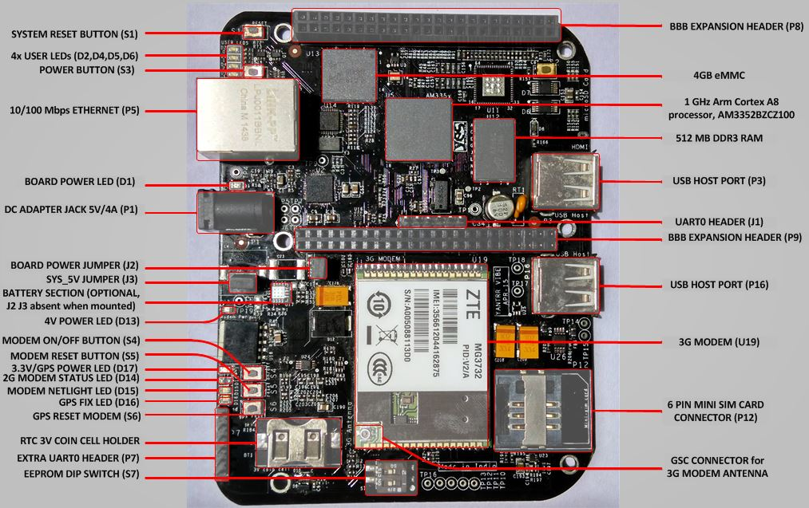
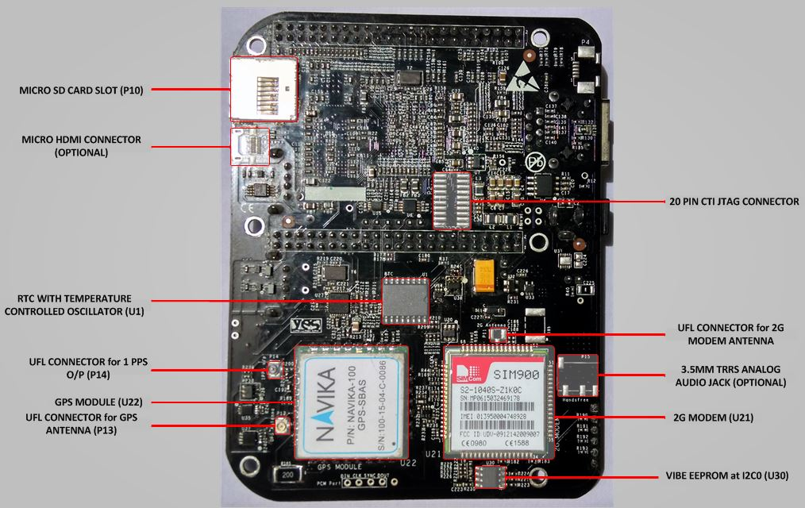

SW startup guide for VIBE
VIBE IoT platform is a unique combination of community famous Beaglebone Black with industry standard modem connectivity for WAN. Below, we describe how to set up VIBE and the associated software.
Overview
VIBE is shipped with its onboard 4GB eMMC flashed with latest Debian Wheezy console image with kernel 3.8.13-bone70. This pre-flashed image is preconfigured with all the settings and with the kernel patches to use all the features on VIBE namely 3G/2G modem, Two USB host port, RTC, GPS(if present), Ethernet Reset over GPIO.
A prebuilt SD Card image(3.65GB) is also available for download as VIBE Debian Wheezy SD card image
Following kernel patches/software configurations are included in the VIBE images :
- RTC enabled in kernel
- USB0 OTG behaviour changed from client to host
- HDMI audio disabled to use Ethernet PHY reset over GPIO
- Device tree overlay file to use 1PPS from GPS module at a GPIO
- USB drivers for 3G modem included in kernel
- Device tree overlay files for UART1 and UART4
Hardware Configurations
VIBE stands for VAYU Integrated Beaglebone Black. It operates similar to the Beaglebone black with VAYU M2M cape integrated on to it in a single board.
Following images give a proper understanding of the VIBE :


Beaglebone Black section
-
Processor : VIBE uses TI's Sitara ARM cortex-A8 AM3352 1 Ghz processor(AM3352BZCZ100) which is different from 1GHz AM3358(AM3358BZCZ100) used in original Beaglebone Black. The differences between the two being AM3352 does not have PRU subsystem, EtherCAT and SGX Graphics support.
-
USB host ports : VIBE contains two USB 2.0 HS host ports with type A connector whereas original Beaglebone black has only one. VIBE has reconfigured USB0 OTG port as self powered USB hub host ports. So there is no USB client port. USB1 OTG port remains configured as USB 2.0 Host port and used for interface with 3G modem.
-
Battery : VIBE can be powered up by 3.7V Li-ion rechargeable battery with automatic backup switch over circuit from 5V DC input and can power up the whole VIBE including 3G/2G modem, both the USB Host ports and HDMI. Original Beaglebone black also supports 3.7V Li-ion Rechargeable battery but with limited functionality of USB host port and HDMI unavailable.
-
Ethernet reset : VIBE includes a standalone ethernet reset circuit over GPIO . This addresses a bug in the original beaglebone black where the Ethernet PHY is not detected at bootup and board had to be reset (http://bugs.elinux.org/issues/67).
- In VIBE, the ethernet phy can be individually reset separate from the whole board by toggling gpio GPIO3_21(GPIO 117).
-
To use the GPIO ethernet reset feature, HDMI audio has to be disabled in device tree and then GPIO1_27(GPIO 59) has to be pulled low so that GPIO3_21 is available for use. Also, HDMI is an optional feature on VIBE.
-
Watchdog Timer : VIBE includes a watchdog timer circuit which can generate an external reset to PMIC and address the Under Voltage Lockout(UVLO) issue faced in Original Beaglebone Black. If the PMIC TPS65217C enters in UVLO and is not resolved within 10s, watchdog timer will generate an external reset to PMIC.
-
Real Time Clock : VIBE has an accurate Real Time clock with an integrated temperature compensated oscillator and crystal for time keeping operations.
- It includes a 3V non-chargeable coin cell ( CR1025/CR1216/CR1220) for standby power.
- RTC (DS3231) is interfaced over I2C2 to AM3352 processor. Its registers can be read to indirectly serve as Temperature sensor too.
-
RTC IC generates a 1Hz Square wave signal. This signal is available(optionally) on a uFL connector and GPIO27 when GPS module is not present.
-
Extra UART0 header at the edge of the board for easy handling and convenience.
-
Fully compatible Beaglebone Black expansion header. Most of the LCD capes are compatible with VIBE.
Radio section
VIBE has an option between 2G/GPRS modem and 3G/HSPA (3G/CDMA) modem for WAN connectivity.
- 2G modem : The 2G modem is interfaced via UART to UART1 port of the AM3352 processor on VIBE. There are following versions for different regions :
Quad-Band(2G-Q) : For Global connectivity covering bands GSM 850/EGSM 900/DCS 1800/PCS 1900 with data rates of 85.6kbps DL/42.8kbps UL.
Dual-Band(2G-D) : For Asia/Europe connectivity covering bands EGSM 900/DCS 1800 with data rates of 85.6kbps DL/42.8kbps UL.
- 3G modem : The 3G modem is interfaced via USB2.0 HS on USB1 Host port of AM3352 processor on VIBE.
There are following versions for different regions in both GSM/HSPA and CDMA/EVDO :
3G HSPA-A (3GH-A) : For Asia/Europe connectivity covering bands WCDMA 2100 and GSM 850/EGSM 900/DCS 1800/PCS 1900 with data rates of 7.2Mbps DL/5.76Mbps UL.
3G HSPA-B (3GH-B) : For Americas connectivity covering bands WCDMA 2100/850 and GSM 850/EGSM 900/DCS 1800/PCS 1900 with data rates of 7.2Mbps DL/5.76Mbps UL.
3G HSPA-C (3GH-C) : For Asia/Europe/Australia Connectivity covering bands WCDMA 2100/900 and GSM 850/EGSM 900/DCS 1800/PCS 1900 with data rates of 7.2Mbps DL/5.76Mbps UL.
3G HSPA-D (3GH-D) : For Global connectivity covering bands WCDMA 850/1900/2100 and GSM 850/EGSM 900/DCS 1800/PCS 1900 with data rates of 3.6Mbps DL/384kbps UL.
3G CDMA (3GC-A) : For Global connectivity covering bands CDMA 800/1900 with data rates of 3.1Mbps DL/1.8Mbps UL.
3GH-A/B/C and 3GC-A modems create ports /dev/ttyUSB0, /dev/ttyUSB1 and /dev/ttyUSB2 with ports assigned as :
a. /dev/ttyUSB0 : Modem port and AT commands port
b. /dev/ttyUSB2 : AT commands port
3GH-D modem creats ports /dev/ttyUSB0, /dev/ttyUSB1, /dev/ttyUSB2, /dev/ttyUSB3 with ports assigned as :
a. /dev/ttyUSB1 : AT commands port
b. /dev/ttyUSB3 : Modem port and AT commands port
Both 2G/3G modems have following control interfaces :
a. Modem Hard reset over GPIO - GPIO44
b. Modem Hard reset over push button switch - S5
c. Modem On/Off over GPIO - GPIO45
d. Modem On/Off over push button switch - S4
e. Netlight/Signal LED - D15 (this feature is optional in 3GH-A/B/C and 3GC-A modules)
f. 3G Modem Antenna - On-module GSC connector
g. 2G Modem Antenna - uFL connector
h. 3G Modem Wakeup_out/ 2G/3G UART RI - GPIO26
i. Modem Interface - 2G : UART1 (rx,tx) ; 3G : USB2.0 HS USB1 (and UART1 - optional)
j. SIM/RUIM card - 6 pin Push-pull mini-sim card connector
k. Audio - 3.5mm TRRS Analog stereo audio and mic jack(optional)
Additional interfaces for 2G modem only :
l. UART RTS : I2C1_SCL(UART1_RTS)
m. UART CTS : I2C1_SDA(UART1_CTS)
n. UART DTR : GPIO61
o. UART DCD : GPIO65
p. 2G Modem Status GPIO : GPIO47
q. 2G Modem Status LED : D14
r. 2G Debug UART : on Extra UART0 header
- Default values of GPIO44 and GPIO45 is high.
- USB drivers for the modem (21f5:2012, 21f5:2009, 19d2:ffeb, 19d2:fffe) should be included in the kernel. We provide pre-compiled images with USB drivers included in the kernel.
GPS section
VIBE provides GPS module as an add-on feature to 3G/2G modem and/or as a standalone feature.
GPS module is interfaced on VIBE over UART at UART4 port. NMEA-0183 messages from the GPS modules can be accessed at /dev/ttyO4 port at baud rate of 19200.
Following are the hardware interfaces of GPS module on VIBE :
- Module Interface : UART4(rx,tx) 19200 raw
- Module Reset over GPIO : GPIO46
- Module Reset over push button : S6
- 1 PPS output over GPIO : GPIO27
- 1 PPS output over uFL connector : P14
- GPS Fix Led : D16
- GPS module Power Led (3.3V) : D17
- GPS Antenna : uFL connector P13
- Battery backup for Hot start : 3V coin cell
GPIO46 should be set to high as Default state for the GPS module to function
Keep the GPS antenna under open sky for better operations and depending on whether GPS module had a cold, warm or hot start, GPS fix LED will soon start blinking at 1Hz.
Getting started
Setting up the system
- Place 3V coin cell(supplied with VIBE) in the holder for RTC and/or Navika hot start feature.
- Place a data enabled mini-SIM in the SIM card slot and connect a GSM antenna to the respective 2G/3G antenna connector.
- Ensure that the power jumpers J2 and J3(ignore if battery feature present) on VIBE are in place and eeprom address set at 0x54 using dip switch S7
- Power up VIBE using the 5V,5A DC adapter(supplied with VIBE).
- After powering up and bootup, ssh into VIBE by any of the following option :
a. Through 3.3V UART to USB cable at either of UART0 headers.
b. Through Ethernet Cable (at IP 192.168.1.150 for preflashed eMMC images)
c. Through HDMI monitor and USB keyboard (when HDMI feature present)
Username for root login is root and password is root. For user login, username is debian and password is temppwd.
a. Through 3.3V UART to USB cable
This gives debug-console access to VIBE. Once login prompt comes, use the above provided username and password to login. These cables are available as an accessory on Yantrr (USB UART adapter with jumper wires) and further options are also listed here.
Download link for Windows drivers for the adapter - click here
b. Through Ethernet cable
Pre-flashed image on the emmc has the fixed IP address as 192.168.1.150 with gateway 192.168.1.1 SSH into VIBE over ethernet :
ssh -l root 192.168.1.150
For more help please follow.
c. Through HDMI Display and USB Keyboard
This option is available for use in VIBE with HDMI option. Default VIBE comes without HDMI configuration.
To ssh into VIBE using this method, a micro HDMI to HDMI cable (click here), a display with HDMI port and a USB Keyboard is needed. Setup the VIBE with the micro HDMI to HDMI cable, Display and USB keyboard before powering it up. Once VIBE starts booting, a login prompt comes within some time. Use the username and password as provided above to login.
After logging into VIBE, we have to set some GPIOs and effect some configurations so that it can be used desirably. In pre-flashed image, all these settings are pre defined and configured once VIBE boots up successfully.
The set of commands executed at bootup in pre-flashed image are in this file :
cd ~
nano boot_run.sh
Basically after logging into the VIBE, GPIOs 44, 45 and 46 have to be set high as output.
cd /sys/class/gpio/
echo 44 > export
echo 45 > export
echo 46 > export
cd gpio44
echo “high” > direction
cd ..
cd gpio45
echo “high” > direction
cd ..
cd gpio46
echo "high" > direction
NOTE : In pre-flashed image, for ease of use of regular commands with the GPIOs, functions have been created: pinexp, setout, setin, pinread.
pinexp 45 //export gpio45 to userspace
pinread 45 //read value of gpio45
setin 45 //set gpio45 in input mode
setout 45 high //set gpio45 in output mode as high value
setout 45 low //set gpio45 in output mode as low value
Power On Modem
- For 2GQ-A,2GP-A,3GH-A/B/C and 3GC-A types :
Modem can be powered on by providing a low level pulse at ON/OFF Pin for 3-4s when the module is off. It can be achieved by either using the push button switch S4 or GPIO45.
GPIO45 should always be in default High state.
-
3G Modems are configured to be turned on after bootup in pre-flashed image or sd card image provided by us. 2G modems need to be issued a Power-On cycle.
cd /sys/class/gpio/ echo 45 > export cd gpio45 echo "high" > direction sleep 4 echo "low" > direction sleep 4 echo "high" > direction -
After some time, LED D15 should start blinking as to indicate modem has turned on (this feautre is optional in 3GH-A/B/C and 3GC-A modules).
-
For 3GH-D type :
For complete instructions for 3GH-D type of modems please follow.
Following sections are for 3G modem only (for 2G skip to next section) :
Once 3G Modem is properly turned on, check that modem is visible on the USB bus by issuing following command:
lsusb
Bus 001 Device 002: ID 0424:2412 Standard Microsystems Corp.
Bus 001 Device 001: ID 1d6b:0002 Linux Foundation 2.0 root hub
Bus 002 Device 001: ID 1d6b:0002 Linux Foundation 2.0 root hub
Bus 001 Device 034: ID 21f5:2012
Bus 001 Device 007: ID 046d:0825 Logitech, Inc. Webcam C270
*System messages (logs) show what happened when 3G modem was turned on and its drivers were assigned8
dmesg | grep -i usb
usb 1-1.1: New USB device found, idVendor=21f5, idProduct=2012
usb 1-1.1: New USB device strings: Mfr=3, Product=2, SerialNumber=4
usb 1-1.1: Product: StrongRising Technologies
usb 1-1.1: Manufacturer: Modem
usb 1-1.1: SerialNumber: 000000000002
usb 1-1.1: usb_probe_device
usb 1-1.1: configuration #1 chosen from 1 choice
usb 1-1.1: adding 1-1.1:1.0 (config #1, interface 0)
usbserial_generic 1-1.1:1.0: usb_probe_interface
usbserial_generic 1-1.1:1.0: usb_probe_interface - got id
usbserial_generic 1-1.1:1.0: The "generic" usb-serial driver is only for testing and one-off prototypes.
usbserial_generic 1-1.1:1.0: Tell linux-usb@vger.kernel.org to add your device to a proper driver.
usbserial_generic 1-1.1:1.0: generic converter detected
usb 1-1.1: generic converter now attached to ttyUSB0
usb 1-1.1: adding 1-1.1:1.1 (config #1, interface 1)
usbserial_generic 1-1.1:1.1: usb_probe_interface
usbserial_generic 1-1.1:1.1: usb_probe_interface - got id
usbserial_generic 1-1.1:1.1: The "generic" usb-serial driver is only for testing and one-off prototypes.
usbserial_generic 1-1.1:1.1: Tell linux-usb@vger.kernel.org to add your device to a proper driver.
usbserial_generic 1-1.1:1.1: generic converter detected
usb 1-1.1: g'''eneric converter now attached to ttyUSB1'''
usb 1-1.1: adding 1-1.1:1.2 (config #1, interface 2)
usbserial_generic 1-1.1:1.2: usb_probe_interface
usbserial_generic 1-1.1:1.2: usb_probe_interface - got id
usbserial_generic 1-1.1:1.2: The "generic" usb-serial driver is only for testing and one-off prototypes.
usbserial_generic 1-1.1:1.2: Tell linux-usb@vger.kernel.org to add your device to a proper driver.
usbserial_generic 1-1.1:1.2: generic converter detected
usb 1-1.1: '''generic converter now attached to ttyUSB2'''
When using Default debian image without USB drivers for 3G modem, issue following command:
modprobe usbserial vendor=0x21f5 product=0x2012
It is recommended to add a proper driver for the modem in kernel. The generic driver is not reliable.
Note : If the modem is not visible after the these steps, please cycle through the turn on-off procedure for the modem
Note : If the modem is not visible after these steps or any issues are faced while initializing the modem please contact Yantrr Support (support@yantrr.com) with the above log messages (dmesg | grep –I usb or /var/log/syslog).
Understanding the ports for 2G Modem on VIBE-2G
The 2G modem on VIBE-2G OR VIBE-2G-GPS/TIM board is interfaced via UART1.
The 2G modem is accessible over the UART1 port, /dev/ttyO1.
In default Debian images, UART1 port's device tree has to be loaded into the kernel using the following command :
cd /lib/firmware
echo BB-UART1 > /sys/devices/bone-capemgr.*/slots
All the AT Commands can be issued to the 2G modem on ttyO1 port with the baud rate of 115200, 8N1. The UART port of modem is available at one instant only, either it is establishing ppp connection or AT commands are executed on it.
Understanding the ports for 3G Modem on VIBE-3G
The 3G modem on VIBE-3G OR VIBE-3G-GPS/TIM board is interfaced via USB2.0 HS to USB1 host port.
VIBE-3GH-A/B/C and 3GC-A modmes enumerate following serial to USB ports when proper USB drivers are present:
/dev/ttyUSB0 /dev/ttyUSB1 /dev/ttyUSB2
- ttyUSB0 is Data port & AT commands for modem, use this for the WVDIAL or PPPd to establish data connection
- ttyUSB1 is the diagnostics port for the Firmware upgrade
- ttyUSB2 is the AT Commands port only.
Note :These /dev/ttyUSB ports are only created if proper drivers are present or when “modprobe usbserial” command is issued. Pre-flashed image includes all the USB drivers.
Note : Both ttyUSB0 and ttyUSB2 take the AT commands, but ttyUSB0 port is also a Data communications port so for all intended purposes of issuing AT commands use ttyUSB2 port(PCUI port).
Power Off Modem
The modem can be powered off by providing a low level pulse at ON/OFF pin for 3-4s when the module is On. It can be achieved by either using the push button switch S4 or GPIO45.
cd /sys/class/gpio/
echo 45 > export
cd gpio45
echo "high" > direction
sleep 4
echo "low" > direction
sleep 4
echo "high" > direction
Modem can also be turned off by issuing following AT commands on port /dev/ttyUSB2 for 3GH-A/B/C type modems.
AT+ZPWROFF
Soft Resetting the Modem
Steps -
- Power Off the Modem.
- Wait for 1-2s at least.
- Power on the modem.
Hard Resetting the Modem
There might arise situations where modem does not seem to be responding to any commands issued on AT commands port or it cannot be turned on/off. In such scenarios, issue hard reset to the modem. It can be done by either toggling Switch S5 for at least 100ms or pulling GPIO44 low for 1s and then setting it high again.
cd /sys/class/gpio/
cd gpio44
echo "low" > direction
sleep 1
echo "high" > direction
Note : Please use hard reset conservatively. Soft reset should be preferred under most conditions.
3GH-D modems
For detailed instructions wrt 3GH-D type of modems please follow.
AT Commands Manual
The AT Command Manual for the 3GH-A/B/C and 3GC-A type Modules can be downloaded from WCDMA here
The AT Command Manual for the 3GH-D Module is available on request. Contact Yantrr support.